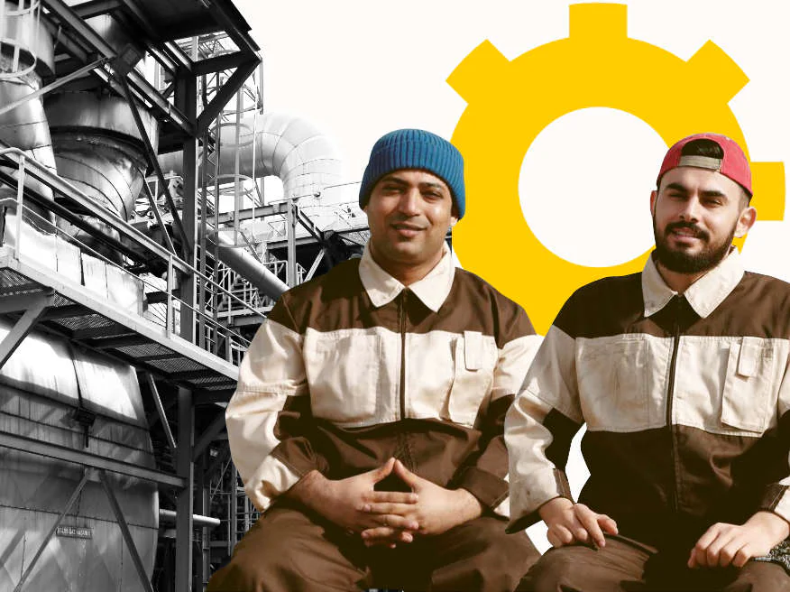
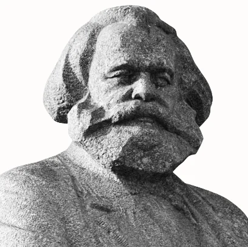

Nossos princípios fundamentais
A Vanguardia Colombiana, como associação com vocação de serviço à sociedade, apresenta um programa com um projeto político definido com relação ao Estado, no qual se conectam a gestão da vida cotidiana dos trabalhadores por parte desses mesmos trabalhadores com uma política externa, uma geopolítica e relações internacionais centralistas, cuja meta seja a insubordinação da Colômbia frente à submissão da Pátria a interesses estrangeiros constantes há dois séculos.
Os eixos sobre os quais desenvolvemos nosso programa são, em primeiro lugar, a predominância dos interesses do povo trabalhador acima das ambições da burguesia parasitária que há dois séculos nos mantém no subdesenvolvimento, a impotência e a barbárie. E para poder realizar efetivamente esses planos e programas, partimos dos seguintes princípios fundamentais:
Pontos programáticos
Remodelação dos Poderes do Estado
Instauração de um regime político constitucional inspirado no materialismo político. Divisão de poderes em dezoito, nove descendentes (administrativos) e nove ascendentes (populares). Os nove poderes descendentes se conformarão seguindo a estrutura proposta por Gustavo Bueno em seu Primeiro ensaio sobre as categorias das "ciências políticas": Poderes da Camada Conjuntiva: Poder Executivo (que terá prioridade sobre o restante), Poder Legislativo e Poder Judiciário; Poderes da Camada Basal: Poder Gestor, Poder Planejador (que terá prioridade) e Poder Redistributivo; e Poderes da Camada Cortical: Poder Militar, Poder Federativo e Poder Diplomático. Os poderes ascendentes populares servirão para controlar as ações dos poderes descendentes e cooperar para a estabilidade e recorrência dos planos e programas estatais. A reorganização da administração pública primeiro colombiana e depois grã-colombiana, evitando que nela se encontrem conspiradores contra nossa pátria. Em matéria militar, aumento do orçamento das Forças Armadas, reorientação ideológica das FFAA atualmente anglofilas e aburguesadas por uma doutrina realmente nacionalista, operária e camponesa, e conexão de nossa indústria militar com o máximo desenvolvimento tecnocientífico e industrial possível. Eliminação de setores anglofilos, otanistas, pan-americanistas, europeístas e subordinantes do Exército a interesses estrangeiros ou burgueses.
Socialismo, Reindustrialização e Controle Operário do Planejamento Científico da Economia
Nacionalização e socialização progressiva dos setores estratégicos da economia colombiana, especialmente a banca, o sistema financeiro, a indústria energética, mineral, siderúrgica, petroquímica, farmacêutica, tecnológica e as infraestruturas fundamentais, garantindo o controle público e social dos recursos estratégicos da Nação. Intervenção e planejamento econômico, mediante cooperativas e associações de produtores, nos setores agrícola, pecuário, pesqueiro e agroindustrial, fomentando a propriedade cooperativa, a modernização produtiva e a soberania alimentar. Reorganização das relações de produção sob o controle dos próprios trabalhadores e do planejamento estatal, mediante organismos de planejamento e coordenação econômica em escala nacional, departamental e municipal, com o objetivo de impulsionar a industrialização da Colômbia, recuperar a capacidade produtiva nacional, gerar emprego qualificado, facilitar o retorno de trabalhadores colombianos emigrados, tanto qualificados quanto não qualificados, e promover o desenvolvimento econômico das regiões historicamente abandonadas. Aproveitamento das capacidades produtivas dos departamentos e municípios para estabelecer polos industriais e tecnológicos especializados, reduzindo a concentração econômica e demográfica nas principais cidades do país. Impulso, modernização e expansão da infraestrutura ferroviária nacional mediante a recuperação e ampliação da malha ferroviária, a articulação dos corredores do Atlântico, do Pacífico e do interior do país, e o relançamento da produção nacional de material ferroviário, maquinário, componentes e equipamentos industriais. Fortalecimento da indústria metalúrgica, siderúrgica, mecânica e de construção de infraestruturas, reduzindo a dependência das importações em setores fundamentais para o desenvolvimento nacional. Recuperação e fortalecimento da formação profissional e da capacitação laboral pública, mediante o Serviço Nacional de Aprendizagem (SENA), com ampliação da oferta de cursos para trabalhadores empregados e desempregados, formação técnica e tecnológica, avaliações e certificações oficiais. Adequação permanente dos programas formativos às necessidades do planejamento econômico nacional, da reindustrialização e do desenvolvimento científico e tecnológico. Fomento do empreendedorismo socialista, cooperativo e comunitário, bem como da iniciativa econômica privada, sempre que a geração e a distribuição do excedente produtivo (mais-valia) estejam submetidas a mecanismos efetivos de participação e controle operário, garantindo a intervenção dos trabalhadores nas decisões econômicas e na distribuição dos benefícios da produção. Supressão progressiva dos encargos e cotas que dificultam o exercício do trabalho autônomo e do empreendedorismo individual, especialmente para os trabalhadores por conta própria que não tenham empregados a seu cargo, estabelecendo mecanismos de contribuição proporcionais à sua renda real e evitando que as obrigações tributárias e administrativas asfixiem as pequenas atividades econômicas. Perseguição à fraude fiscal, à evasão tributária, à corrupção econômica e ao trabalho informal que implique exploração laboral ou evasão sistemática das obrigações legais. Desenvolvimento de mecanismos de formalização laboral e empresarial que permitam incorporar progressivamente os trabalhadores informais à economia formal, garantindo seus direitos sociais, trabalhistas e previdenciários sem impor encargos desproporcionados aos pequenos produtores e trabalhadores independentes. Apoio e assinatura de acordos federativo-comerciais, tratados de cooperação econômica e associações bilaterais e multilaterais que convenham aos interesses geoestratégicos da Colômbia, especialmente com os países ibérofonos, americanos, africanos e asiáticos. Fomento da diplomacia, da concórdia, da cooperação internacional e das relações comerciais mutuamente benéficas com todos os Estados do planeta, priorizando a integração econômica regional e a diversificação dos mercados internacionais. Insubordinação fundante frente à ideologia do livre-comércio, defesa da soberania econômica nacional e estabelecimento de um planejamento pluralista da economia, centralizado e descentralizado segundo as características e necessidades de cada setor produtivo. Planejamento científico dos meios e das relações de produção mediante a aplicação das tecnologias informáticas mais avançadas, sistemas de processamento massivo de informação, inteligência artificial e ferramentas de análise econômica para o conhecimento e a coordenação de preços, custos, estoques, capacidades produtivas, valores de uso, fluxos comerciais, necessidades de consumo e operações aduaneiras. Desenvolvimento de um sistema de planejamento econômico que não prescinda da geopolítica, das particularidades territoriais nem da importância da soberania estatal para organizar a produção e o comércio exterior. Fortalecimento da capacidade do Estado colombiano de intervir nos setores estratégicos, orientar os investimentos, coordenar as cadeias produtivas nacionais e garantir que o desenvolvimento econômico responda às necessidades materiais da população e aos interesses estratégicos da Nação. Estes elementos, junto com a construção doutrinal do materialismo político, permitirão sentar as bases de um Socialismo com Características colombianas, adaptado às condições históricas, geográficas, econômicas, sociais e culturais da Colômbia, articulando o planejamento científico da economia, a soberania nacional, o controle operário, a industrialização e a integração do espaço ibérofono.
Medidas contra o Separatismo e contra a subordinação cultural
Defesa da unidade nacional, da integridade territorial e da soberania política da República da Colômbia. Rejeição dos projetos separatistas que pretendam fragmentar a Nação colombiana, dividir seu território ou enfraquecer sua capacidade política, econômica e estratégica. Perseguição e ilegalização, mediante os procedimentos constitucionais e judiciais correspondentes, de organizações que promovam a ruptura territorial por meios violentos, armados ou contrários à ordem constitucional. Oposição política às propostas de secessão territorial e defesa da unidade da República frente a qualquer projeto de fragmentação nacional. Intolerância absoluta frente a qualquer tentativa de fragmentar os sistemas nacionais de proteção social, os recursos públicos destinados às pensões, o patrimônio histórico e cultural da Nação e os instrumentos de redistribuição da riqueza construídos mediante o esforço e o sacrifício de gerações de trabalhadores colombianos. Defesa da solidariedade interterritorial e da distribuição equitativa dos recursos públicos, evitando que as regiões com maiores capacidades econômicas concentrem os recursos nacionais em detrimento dos departamentos historicamente excluídos. Encerramento e supressão de toda instituição, organismo ou entidade que receba subvenções estatais e utilize os recursos públicos para fins contrários à soberania nacional, à igualdade de direitos entre os colombianos ou ao interesse geral, bem como daquelas que incorram em desperdício fiscal, corrupção, clientelismo ou instrumentalização ideológica dos fundos públicos. Revisão integral dos mecanismos de financiamento estatal de organizações não governamentais, fundações e associações, incluindo aquelas vinculadas a interesses feministas, queer, evangélicos, islamistas, separatistas, partidários do livre-comércio irrestrito, otanistas, ou de correntes historiográficas negrolendárias, quando suas atividades concretas impliquem práticas ilegais, utilização irregular de recursos públicos ou subordinação de interesses nacionais a agendas estrangeiras. Esta revisão será realizada sem discriminações por identidade, religião, orientação sexual ou pensamento político, mas atendendo às suas atuações e ao cumprimento de suas obrigações legais. Revisão das relações institucionais e financeiras com fundações e organizações estrangeiras, especialmente aquelas vinculadas à Open Society Foundations de George Soros, à Fundação Friedrich Ebert e à Fundação Bertelsmann, bem como com outras entidades que possam intervir em assuntos internos da Colômbia em defesa de interesses geopolíticos, econômicos ou ideológicos alheios à soberania nacional. Estabelecimento de mecanismos de fiscalização, transparência e controle do financiamento estrangeiro de organizações não governamentais. Os recursos públicos que atualmente se destinem a financiar organizações que não respondam ao interesse geral serão reorientados para o orçamento das instituições nacionais competentes em matéria de política social, proteção dos trabalhadores, assistência às famílias, redução da pobreza e desenvolvimento comunitário, sob uma orientação socialista. Revisão para cima das pensões mais baixas e das prestações destinadas a garantir uma velhice digna, estabelecendo critérios de redistribuição que levem em conta a renda, o patrimônio e as condições socioeconômicas dos beneficiários, priorizando os pensionistas com menores recursos e garantindo proteção especial aos idosos em situação de pobreza e vulnerabilidade.
Política Penal
Cumprimento integral das penas, reduzindo-as somente nos delitos leves. Pena máxima ou prisão perpétua com trabalhos forçados para os delitos mais graves (pedofilia, terrorismo, assassinato, sicariato, secessão e sedição, estupro, roubo e desvio de recursos dos cofres públicos, contraespionagem, venda ou informação de segredos de Estado a terceiras potências). Compromisso férreo com a segurança cidadã mediante o reforço de efetivos policiais e uma política educativa voltada para a convivência responsável e respeitosa. Endurecimento da proibição e da perseguição do proxenetismo, da gestação sub-rogada e da eugenia disfarçada de eutanásia (esta somente será permitida em casos de doenças com dores extremas). Elaboração de uma Lei Integral contra a Violência Intrafamiliar que cubra e proteja as mulheres maltratadas por homens, os homens maltratados por mulheres e as pessoas que sofram violência dentro de casais homossexuais. Esta lei também protegerá as crianças e os idosos contra a violência e o abuso. Proibição da hormonização e das operações de "mudança de sexo" em menores de idade. Ilegalização de toda associação que promova a ideologia queer e reforma dos programas escolares para erradicar a ideologia de gênero nas escolas. No que se refere à delinquência comum, aplicaremos o cumprimento integral das penas nos delitos mais graves (crimes horrendos) e trabalhos comunitários no regime penitenciário. Promoção de campanhas públicas contra o vício em pornografia, contra a hipersexualização capitalista e contra o uso de todo tipo de substâncias viciantes.
Política Externa e paniberismo
Promoção da Iberofonia como espaço geopolítico, geoeconômico e geocultural, articulando a Colômbia como um de seus principais atores e como ponte estratégica entre a América do Sul, a América Central, o Caribe e o espaço atlântico. A Colômbia, por sua posição geográfica, dimensão demográfica, projeção bioceânica e vínculos históricos e culturais, deve contribuir ativamente para a construção desse espaço de cooperação entre as nações de línguas espanhola e portuguesa, sem estabelecer relações de subordinação entre seus integrantes. Promoção da convergência institucional entre a Secretaria-Geral Ibero-Americana (SEGIB) e a Comunidade dos Países de Língua Portuguesa (CPLP), com vistas a estabelecer uma estrutura de cooperação ibérofona comum. Apoio, a partir desta convergência, aos processos de integração regional existentes, particularmente o MERCOSUL, a Comunidade Andina (CAN), a Associação Latino-Americana de Integração (ALADI), a Comunidade de Estados Latino-Americanos e Caribenhos (CELAC) e os mecanismos de cooperação sul-americana, centro-americana e caribenha. Reconstrução e fortalecimento das Cúpulas Ibero-Americanas como Cúpulas Ibérofonas anuais, nas quais prevaleça o tratamento igualitário entre as nações, o respeito mútuo, a defesa da soberania nacional e da integridade territorial, a não ingerência nos assuntos internos e o estreitamento dos vínculos políticos, diplomáticos, econômicos, comerciais, científicos, tecnológicos, educacionais e culturais. Potencialização da rede do Instituto Cervantes e das instituições homólogas de promoção linguística e cultural dos países ibérofonos, impulsionando o espanhol e o português como idiomas de alcance universal. Promoção particular de seu ensino e difusão nos Estados Unidos da América do Norte, na China, nos países da Nova Rota da Seda e em outros espaços estratégicos da economia mundial. Reorientação das relações diplomáticas da Colômbia com a Venezuela e os demais países da antiga Grã-Colômbia, buscando a máxima integração possível segundo o momento histórico concreto, sobre a base do respeito à soberania nacional, à integridade territorial, à cooperação fronteiriça, à segurança regional e à integração econômica. Estabelecimento de acordos de amizade, cooperação e desenvolvimento com o Brasil, a Argentina, o México e o resto das nações ibérofonas, assim como o fortalecimento das relações com a África, especialmente com os países de língua portuguesa, e com as nações do Levante oriental e do Oriente Médio. Promoção de uma política externa ibérofona de apoio mútuo em matéria de soberania e integridade territorial, articulando posições comuns entre a Colômbia, a Argentina, a Venezuela, a Guatemala, Cuba, Porto Rico e as demais nações interessadas. Apoio institucional máximo às reivindicações de soberania sobre as ilhas Malvinas, Gibraltar, o Essequibo, Belize e Guantánamo. Defesa das reivindicações territoriais e de soberania mediante o diálogo e a cooperação diplomática institucional. Impulso da Colômbia como interlocutor estratégico entre a Ibero-América e a Ibero-África, promovendo sua aproximação institucional à União Africana e o fortalecimento das relações diplomáticas, comerciais e culturais com os países africanos. Apoio à cooperação entre a União Africana e os organismos de integração ibérofonos, levando em conta os vínculos históricos, culturais e linguísticos existentes entre ambos os espaços.
Saúde, Educação e Igualdade de Oportunidades para a Função Pública
Centralização e unificação das competências fundamentais em matéria de educação e saúde, garantindo a coordenação nacional dos sistemas públicos e evitando as desigualdades territoriais na prestação desses serviços. Implementação de um cartão único de identificação do sistema de saúde para todos os colombianos, com acesso interoperável aos prontuários clínicos dos pacientes em todos os centros de saúde da Nação, independentemente de seu departamento ou município de residência. Ampliação das patologias e tratamentos de saúde bucal cobertos pelo sistema de saúde. Melhoria dos processos de contratação de pessoal de saúde e da gestão dos tempos de atendimento médico. Ampliação dos quadros de profissionais nas especialidades com maiores filas de espera no sistema público de saúde. Fortalecimento da produção nacional e da distribuição, por meio do sistema público de saúde, de óculos e outros elementos básicos para o atendimento da saúde visual. Estabelecimento de um sistema educacional nacional unificado, com currículos comuns em todas as disciplinas e em todos os níveis de educação básica e média, mediante uma legislação nacional que garanta a igualdade formativa em todo o território colombiano, respeitando as particularidades culturais e linguísticas reconhecidas constitucionalmente. Modernização da educação técnica, tecnológica e da Formação Profissional para adequá-la às necessidades atuais do mercado de trabalho e do desenvolvimento produtivo nacional. Incorporação da disciplina de Formação e Orientação Laboral em todos os ramos e modalidades do sistema educacional. Defesa de uma Educação Pública de qualidade, aumento progressivo do orçamento estatal destinado a seu desenvolvimento e fortalecimento das instituições educacionais públicas, garantindo o acesso a bolsas, subsídios e ajudas econômicas para os estudantes com maiores necessidades socioeconômicas e para aqueles que demonstrem maior rendimento e esforço acadêmico. Reforço institucional da figura do docente e de sua autoridade pedagógica dentro da sala de aula, garantindo sua proteção frente às agressões e ao bullying escolar. Estabelecimento da obrigatoriedade do uniforme escolar nas instituições educacionais de todos os níveis de educação pré-escolar, básica e média, tanto públicas quanto privadas, com o objetivo de reduzir as diferenças socioeconômicas visíveis, evitar discriminações por motivos de origem social e combater o bullying associado ao vestuário e às condições econômicas dos estudantes. Estabelecimento de um sistema ibérofono de intercâmbio acadêmico e estudantil para cidadãos maiores de 18 anos, promovendo a mobilidade universitária, técnica e tecnológica entre a Colômbia e os demais países da comunidade ibérofona. Fim das desigualdades territoriais no acesso à função pública: estabelecimento de concursos nacionais unificados para os empregos públicos de caráter nacional, mediante critérios homogêneos de seleção, mérito e capacidade. Eliminação de vantagens injustificadas derivadas de particularidades administrativas territoriais, garantindo a igualdade de oportunidades de todos os colombianos no acesso aos cargos públicos, sem discriminações por local de nascimento, residência ou origem regional.
Medidas contra o racismo, a xenofobia e a homofobia
Ilegalização de toda organização política que promova o racismo, a xenofobia e a discriminação por razão de etnia, religião, sexo, orientação sexual ou origem nacional ou internacional.
Estado laico radical e questão religiosa
Estabelecimento de um Estado laico, fundado na separação institucional entre o poder político e as organizações religiosas, sem que isso implique desconhecer a importância histórica, cultural e civilizatória do catolicismo na formação da Nação colombiana. Respeito absoluto ao credo, à ausência de credo e à liberdade de consciência de todos os cidadãos. Proteção da liberdade de culto, sempre que seu exercício não contrarie o ordenamento jurídico, os interesses do Estado colombiano nem os direitos fundamentais de terceiros. A partir dos pressupostos do materialismo político, definimo-nos em matéria religiosa como ateus católicos: negamos a existência de Deus e rejeitamos as explicações sobrenaturais como fundamento do conhecimento filosófico e científico, mas reconhecemos que somos produto de uma tradição histórica, política, institucional e cultural de profunda raiz católica. A cultura católica, suas instituições, tradições, costumes, manifestações artísticas e patrimônio histórico serão especialmente protegidos como componentes fundamentais da identidade histórica da Colômbia e de sua pertença ao espaço cultural hispânico. Defesa e proteção institucional da Igreja católica e de seu patrimônio histórico, educativo, artístico e cultural, incluindo suas universidades, colégios, seminários, ordens religiosas, fundações, arquivos, bibliotecas, templos e demais instituições historicamente vinculadas ao desenvolvimento da Nação colombiana. Reconhecimento da contribuição histórica das ordens religiosas, particularmente dominicanos, franciscanos, agostinianos e jesuítas, para a formação intelectual, educativa e cultural da Hispano-América. Proteção de sua autonomia institucional e de sua liberdade para se organizar conforme suas próprias normas. Oposição à instrumentalização política da religião e ao avanço do fundamentalismo evangélico e neopentecostal, particularmente quando determinadas organizações religiosas pretendam subordinar as instituições da República a autoridades eclesiásticas, impor interpretações teológicas como fundamento exclusivo da legislação civil, intervir coercitivamente na educação pública ou utilizar a fé dos cidadãos como instrumento de manipulação política e eleitoral. Defesa da independência das instituições do Estado frente a qualquer organização religiosa que pretenda se constituir em poder político paralelo. Fiscalização das organizações religiosas que recebam financiamento estrangeiro, especialmente quando existam indícios de ingerência política, financiamento irregular, lavagem de ativos, evasão tributária ou subordinação a interesses geopolíticos estrangeiros. Transparência no financiamento das organizações religiosas e proibição daquelas atividades que, sob aparência de culto, encubram estruturas criminosas, práticas coercitivas ou atividades contrárias ao ordenamento jurídico. O Estado garantirá a liberdade de organização das confissões religiosas, mas promoverá mecanismos de transparência, responsabilidade institucional e cumprimento da legislação nacional. Não se permitirá que nenhuma organização religiosa, independentemente de sua denominação, utilize sua estrutura para desenvolver atividades delitivas, exercer coação sobre seus membros ou vulnerar os direitos fundamentais dos cidadãos. Promoção da tradição filosófica católica e da escolástica hispânica como parte fundamental da formação intelectual colombiana. Incorporação de um ensino profundo e sistemático da filosofia escolástica católica nos programas educacionais, particularmente nas disciplinas de Filosofia, História do Pensamento e História das Ideias Políticas. Estudo rigoroso de seus principais autores, seus sistemas filosóficos, suas controvérsias teológicas e suas contribuições ao direito, à política, à economia e à metafísica. Serão promovidas especialmente a leitura e o estudo direto das obras de: - Santo Agostinho de Hipona, particularmente A Cidade de Deus e Confissões. - São Tomás de Aquino, especialmente Suma Teológica, Suma contra os Gentios e Do Governo dos Príncipes. - Francisco de Vitoria, pilar da Escola de Salamanca e precursor de importantes desenvolvimentos do direito internacional. - Domingo de Soto, por suas contribuições à filosofia política, à teologia moral, ao direito e à economia. - Francisco Suárez, particularmente Disputações Metafísicas e Defensio fidei. - Juan de Mariana, especialmente De rege et regis institutione e De monetae mutatione. - Luis de Molina, por suas contribuições à metafísica, à filosofia moral e à economia. - Melchor Cano, por seu desenvolvimento da metodologia teológica e epistemológica. - Martín de Azpilcueta, por suas contribuições à teoria monetária e econômica. - Diego de Covarrubias e Leyva, por suas contribuições ao direito e à filosofia jurídica. - Tomás de Mercado, por seus estudos sobre o comércio, a moeda e as trocas econômicas. - Luis de León, por seu pensamento filosófico, humanístico e teológico. - Também a obra de outros autores católicos modernos, como Camilo Torres ou Chesterton. Reivindicação e recuperação da Escola de Salamanca como uma das grandes tradições intelectuais da civilização hispânica, estudando suas contribuições à filosofia escolástica, à teoria do Estado, à soberania, ao direito das gentes, à economia política, à propriedade, ao valor, à moeda e às relações entre os povos. Será dada especial atenção à influência dessa tradição na formação histórica das instituições jurídicas e políticas da Hispano-América e nos debates intelectuais que acompanharam a formação das repúblicas hispano-americanas, incluída a Colômbia. Esta formação não terá caráter catequético nem suporá a imposição de crenças religiosas aos estudantes. Será realizada a partir de uma perspectiva histórica, filosófica, crítica e materialista, mediante a leitura direta das fontes e a análise de suas contradições internas, contribuições e limitações. Fomento de uma educação materialista, racionalista e filosófica em todos os níveis educacionais, compatível com o ensino de História e Análise das Religiões, História do Cristianismo e História do Catolicismo. Estudo das religiões como fenômenos históricos, antropológicos, políticos, sociais e culturais, atentando para suas instituições, práticas, doutrinas e consequências materiais. Promoção do racionalismo materialista, da lógica formal, da dialética, da filosofia da ciência e do pensamento crítico nas instituições educacionais, nas universidades, na discussão pública e nos meios de comunicação. Rejeição do fideísmo, do irracionalismo e de qualquer pretensão de subtrair as doutrinas religiosas ao exame crítico da razão. Defesa da tradição católica colombiana frente à subordinação cultural e à substituição de suas instituições históricas, sem prejuízo do respeito às demais confissões religiosas e às pessoas que não professem nenhuma religião. Reconhecimento das festas, celebrações, manifestações artísticas, tradições populares, arquitetura e patrimônio religioso católico como elementos integrantes da cultura histórica nacional, bem como o respeito às festas e tradições indígenas que não entrem em contradição com o direito colombiano. Serão estabelecidos mecanismos de proteção do patrimônio religioso e cultural, bem como das instituições educacionais e assistenciais historicamente vinculadas à Igreja católica, garantindo sua autonomia e sua contribuição para a vida social colombiana. Será garantido que as atividades religiosas se desenvolvam em condições de legalidade, transparência e respeito à ordem pública. As organizações religiosas poderão estabelecer templos, centros de reunião, instituições educacionais e associações conforme a legislação nacional. Suas atividades financeiras estarão sujeitas aos correspondentes mecanismos de fiscalização e transparência, sem discriminações por sua procedência religiosa. Proibição das práticas religiosas que impliquem coação, exploração econômica, abuso de menores, violência, discriminação ilegal ou vulneração dos direitos fundamentais, independentemente da confissão que as promova. Perseguição às organizações que encubram atividades criminosas sob aparência religiosa e proteção dos cidadãos frente às práticas coercitivas de qualquer estrutura sectária ou fundamentalista. Defesa da independência das instituições educacionais frente à imposição de doutrinas religiosas particulares. Nenhum estudante poderá ser obrigado a participar de cerimônias, práticas ou atividades confessionais contrárias às suas convicções, e será garantido o respeito à liberdade de consciência dos menores e de suas famílias. Finalmente, será promovida a recuperação da tradição filosófica hispânica como instrumento de formação intelectual e de afirmação da soberania cultural colombiana, articulando o materialismo político, a escolástica católica, a Escola de Salamanca e o pensamento político hispano-americano na construção de uma doutrina própria: um materialismo grã-colombiano com características hispânicas, fundamentado na razão, na tradição histórica, na soberania nacional e no conhecimento científico.
Os eixos de nossos princípios
1. A disciplina de partido: Com disciplina de partido não estamos falando de obediência cega, mas da condição necessária para transformar nossas convicções em força histórica organizada. Um partido com verdadeiro potencial revolucionário não é a mera soma de indivíduos que compartilhem determinadas ideias: deve constituir-se como uma organização consciente, coesa e capaz de agir como uma vontade política comum. Sem disciplina, a organização se dissolve no individualismo; sem organização, as ideias ficam reduzidas a meras opiniões incapazes de transformar a realidade. A disciplina significa, portanto, subordinar as ambições e preferências particulares às decisões coletivamente adotadas, uma vez esgotada a deliberação interna. Não significa renunciar à crítica nem ao debate: significa compreender que a discussão tem seu lugar dentro da organização e que, uma vez estabelecida uma orientação comum, todos devem contribuir para levá-la adiante. Deste modo, a liberdade de discussão e a unidade de ação não se excluem, mas fazem parte de uma mesma estrutura organizativa. Não se pode transformar uma nação mediante vontades isoladas, apenas mediante homens e mulheres capazes de antepor os interesses comuns às suas ambições particulares, “unidos pela associação e guiados pelo saber”, com uma estratégia definida coletivamente, sustentada pela constância, o trabalho e o compromisso sério. A disciplina é o que permite que um conjunto de pessoas se converta em uma força política organizada. Se cada militante age segundo sua vontade particular, a força coletiva se fragmenta; mas se existe disciplina consciente, cada esforço individual se integra em uma estratégia comum. Só assim a soma de vontades se converte em organização; e a organização converte as ideias em poder real.
2. A unidade na ação: A unidade na ação é a consequência prática dessa disciplina: não basta pensar juntos nem compartilhar um programa; é necessário agir juntos em função de objetivos políticos concretos. Um partido que não seja capaz de intervir organizadamente na realidade está condenado a permanecer como mero espectador dos acontecimentos, por mais corretas que possam ser suas ideias. A unidade na ação significa que, dentro da organização discutimos, mas fora dela agimos como um só. Assim, uma vez definida coletivamente uma orientação política, a organização inteira concentra suas forças em levá-la à prática. Cada militante, cada órgão e cada estrutura deixa de agir como uma vontade independente e passa a fazer parte de uma ação coordenada. Só assim, uma multiplicidade de esforços dispersos pode se converter em uma força capaz de produzir efeitos reais. A dispersão produz impotência, a coesão produz poder; onde cada qual age por conta própria, o adversário impõe seu rumo. A unidade na ação permite acumular forças, sustentar campanhas, intervir nos conflitos concretos, ganhar influência e converter a organização em um ator político efetivo. Mas essa unidade não consiste em uniformidade; nossa filosofia é pluralista, pelo que uma direção política comum, objetivos definidos e capacidade organizativa para executá-los não negam a pluralidade interna, mas a articulam e a convertem em força. A diversidade de opiniões pode existir dentro da organização; o que não pode existir é uma diversidade permanente de vontades contraditórias quando se pretende alcançar um objetivo comum. Não pretendemos anular a personalidade particular de cada membro, porque isso é impossível; mas um partido que decide coletivamente, se começa a agir de maneira fragmentária, carece, em última instância, de capacidade política real. Por isso, disciplina e unidade na ação são duas dimensões inseparáveis, mas não idênticas. A disciplina garante a coesão da organização; a unidade na ação transforma essa coesão em intervenção política. A primeira organiza as vontades; a segunda as põe em prática. Só um partido disciplinado, organizado e consciente de seus objetivos, capaz de deliberar coletivamente e agir de maneira unificada, pode deixar de ser mero objeto espectador da história para se converter em sujeito capaz de disputar e construir o poder real que determine efetivamente o rumo e o destino de nossa nação.

3. O Materialismo político
A concepção materialista da vida política é a doutrina filosófica à qual nos subscrevemos todas as Vanguardas Ibérofonas socialistas, e na qual, orgulhosamente, a Vanguardia Colombiana fez aportes importantes na construção de seus princípios doutrinais fundamentais. É uma filosofia produto do desenvolvimento histórico mediante rupturas e continuidades de toda a tradição filosófica prévia:
Platão: Inicia o primeiro sistema filosófico, ao distinguir um falso filósofo ou sofista de um verdadeiro filósofo, estabelecendo a ontologia das Ideias e o princípio de Symploké, segundo o qual a realidade não é um monismo onde tudo se conecta nem um atomismo onde tudo está absolutamente inconexo.
Aristóteles: Terrenaliza a filosofia mediante as categorias, define o ser humano como um animal político cuja racionalidade depende do marco da sociedade política e aporta uma clareza lógica pré-científica.
Tomás de Aquino: Aplica a racionalidade aristotélica à luz de uma moralidade cristã. Formula as bases de uma teoria objetiva do valor ou do preço justo, subordinada ao bem comum, e demonstra a compatibilidade da razão com a ordem material do cosmos.
Francisco Suárez: Sistematiza a metafísica e separa a filosofia como tratado autônomo da teologia. Junto a seus contemporâneos jesuítas e à Escola de Salamanca, fundamenta que a soberania reside no povo e justifica o direito à insubordinação frente à tirania.
Spinoza: Desfere um golpe no criacionismo teológico mediante a ideia de uma única substância material e infinita e a ordenação geométrica das ideias.
Hegel: Introduz a ontologia da dialética, o desenvolvimento histórico do Espírito Objetivo e a noção de transformação e movimento por contradição em devir.
Marx: Dá a «reviravolta» à dialética hegeliana, descobrindo que o motor da história é a dialética de classes e fundando uma nova ontologia sobre a ideia de produção.
Gustavo Bueno: Tenta dar a «reviravolta» a Marx para purgá-lo de vestígios idealistas, desenvolvendo o materialismo filosófico mediante a teoria do fechamento categorial, o pluralismo ontológico descontinuista e a ideia do Ego Transcendental.
E o Materialismo Político (Polimat) consuma a síntese ou «fusão nuclear» do materialismo histórico marxista, do materialismo filosófico buenista e da tradição filosófica hispânico-católica para construir um sistema filosófico orientado a transformar revolucionariamente a realidade desde a Iberofonia. Desde a escola do Materialismo Político nos reconhecemos como herdeiros legítimos da racionalidade católica —embora não os únicos— e de uma tradição de pensamento que, sem negar outras fontes, pode situar-se em uma linha genealógica que se estende desde os gregos clássicos até a atualidade, transitando principalmente pelos já mencionados Platão, Aristóteles, Tomás de Aquino, Francisco Suárez, Spinoza, Hegel, Marx e Bueno, entre muitos outros autores e pensadores antigos e contemporâneos. Consideramo-nos na vanguarda desse linhagem. Não renegamos nossa história, mas reivindicamos este legado que herdamos e o estudamos em profundidade, junto com sua história, seus aportes e suas categorias fundamentais, para depois assimilá-los, aplicá-los, desenvolvê-los e entretecê-los dialeticamente com o mais avançado e racional das ciências e das humanidades atuais. Não pretendemos «modernizar» a escolástica nem construir um tomismo de esquerda; simplesmente reconhecemos que nossa própria tradição de pensamento hispano-católica contém elementos potentemente racionais, sistemáticos, políticos e realista-materialistas que podem e devem integrar-se em uma concepção filosófica colombiana e ibérofona do presente. Se você quer aprofundar mais em nosso Materialismo Político, recomendamos as seguintes leituras:
4. A implantação política da filosofia: A implantação política de nossa doutrina deve ser desde o poder do Estado, em todas as suas camadas e ramos, para que adquira um caráter secular e transcendental, que acabe com a hegemonia do liberalismo produto do idealismo de raiz protestante, kantiana e burguesa. Opomo-nos ao idealismo, ao gnosticismo, ao pós-modernismo, ao irracionalismo, ao espiritualismo e ao deísmo em qualquer de suas vertentes. Somos ateus católicos, sendo ateu o substantivo e católico o adjetivo. Reivindicamos o contexto cultural católico no qual nos desenvolvemos e sem o qual não podem ser entendidas nem a Colômbia nem a Iberofonia. Nosso materialismo político é solidário ao socialismo, pois somente desenvolvendo um modelo socialista de sociedade nossa doutrina pode se implantar. Entendemos nosso socialismo como um período de transição entre capitalismo e comunismo. Não somos anticapitalistas, mas pós-capitalistas. Não queremos destruir o capital, mas colocá-lo a serviço da classe trabalhadora colombiana até superá-lo dialeticamente.